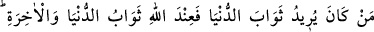

ve pek çok hayrı bulursun. Çünkü takvâ bütün hayırları bünyesinde toplamıştır.
İbn Atâ, takvânın zâhir ve bâtın olarak ikiye ayrıldığını, zâhirî olanın şerîat
ölçülerinin muhâfaza edilmesi, bâtınî olanın ise niyette samîmî olmak olduğunu
söylemiştir.
Takvânın hakîkati, dünyâdan ve ukbâdan yüz çevirip yüce Allah’a yönelmek ve O’na
teveccüh etmektir. Kim de O’na ulaşırsa iki dünyânın köleliğinden kurtularak
hürriyetine kavuşur ve Allahu Teâlâ’nın gerçek kulu olur.
Hafız (k.s.) şöyle demiştir:
Ağaçların hepsi yük altında, çünkü hepsinin bağlılığı var
Ne mutlu serviye ki gam yükünden âzâd
134- Kim dünyâ mükâfâtını isterse (bilsin ki) dünyânın da âhiretin de mükâfatı
Allah katındadır. Allah her şeyi işiten ve her şeyi görendir.
“Kim” ganîmet için savaşan mücâhid gibi “dünyâ sevabını’ mükâfâtını “isterse
(bilsin ki) dünyânın da âhiretin de mükâfâtı Allah katındadır.” Eğer isterse dünya ve
âhiretin her ikisinin mükâfâtı Allah Teâlâ’nın katındadır. Niçin az ve değersiz olan
dünya nimetini istiyor? Duasında “Rabbimiz! Bize dünyâda da iyilik ver, âhirette de
iyilik ver.” (Bakara, 2/201) diyen kimse gibi her ikisini birden ya da en üstün olanını
istesin. Allah Teâlâ’nın rızâsı için cihad eden samîmî insan, ganîmet elde eder, âhirette
de mükâfata kavuşur. Ganîmet, âhiret mükâfâtı yanında hiçbir şey değildir. Yâni, dünyâ
ve âhiret mükâfâtının her ikisi de Allah katındadır. Herkese istediğini verir. Nitekim
Allah Teâlâ: “Kim âhiret kazancını isterse onun kazancını ziyâdesiyle veririz. Kim
de dünyâ kârını isterse ona da istediğini veririz. Ama onun âhirette bir nasîbi
olmaz.” (Şûrâ, 42/20) buyurmuştur.
“Allah her şeyi işiten ve her şeyi görendir.” Allah, işitilen ve görülen her şeyi bilen
ve onlardaki maksatları anlayandır. Yâni onların sözlerinin, cihada sâdece ganîmet elde
etmek için çıktıklarına ve fiillerinin ise sâdece ganîmet elde etme beklentisi olduğunda
cihâda koştuklarına delâlet ettiğini bilir.
Haddâdî bu âyetin riyâkâr münâfıklar için bir tehdit olduğunu söylemiştir. Bir hadiste
de şöyle buyurulmuştur: “Muhakkak ki cehennemde bir vâdî vardır ki, cehennem
ondan günde dört yüz defa Allah’a sığınır. Burası riyâ için Kur’an okuyanlara
hazırlanmıştır.”[181]
Sa’dî (k.s.) şöyle demiştir: